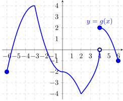

Based on the graph of \(g\), answer the questions below.
- (a)
- List the \(x\)-coordinates of all critical points of \(g\).
- (b)
- List the \(x\)-coordinates of all critical points of \(g\) where \(g'(x)=0\).
- (c)
- List the \(x\)-coordinates of all critical points of \(g\) where \(g'(x)\) is undefined.
- (d)
- List the \(x\)-coordinates of all local maximums of \(g\).
- (e)
- List the \(x\)-coordinates of all local minimums of \(g\).
- (f)
- List all intervals where \(g\) is both decreasing AND concave down.
- (g)
- List all intervals where \(g\) is both decreasing AND concave up.
- (h)
- List all intervals where \(g\) is both increasing AND concave down.
- (i)
- List all intervals where \(g\) is both increasing AND concave up.
- (j)
- List the \(x\)-coordinates of all inflection points of \(g\).